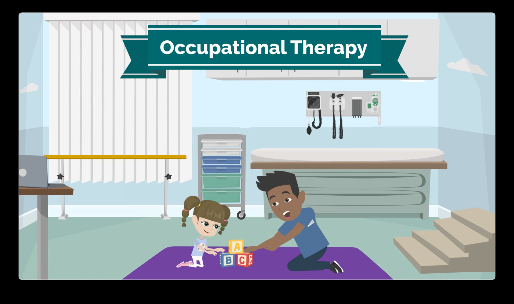
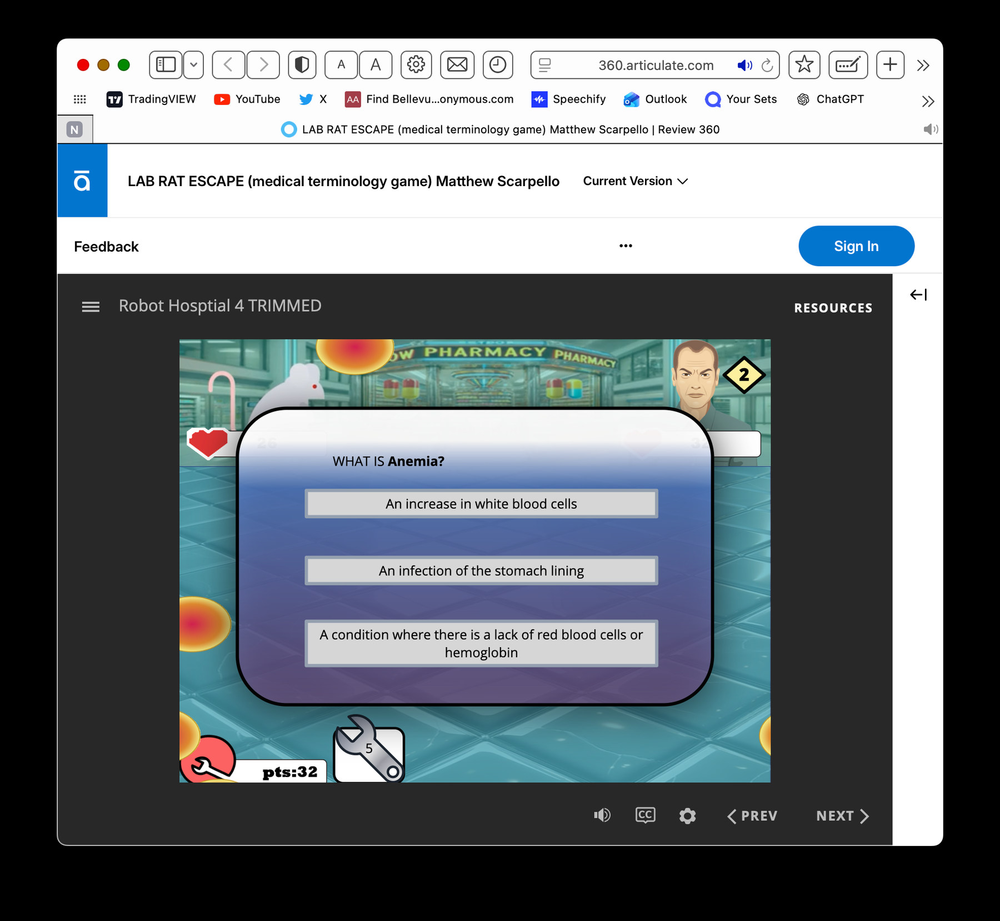

Building trust
By communicating openly and demonstrating my abilities, I helped my colleagues understand where I could contribute most effectively.
University of Nebraska Medical Center / Digital Assistant Intern · 2023–2025
My internship brought together healthcare, technology and creativity. I grew from maintaining digital resources to helping develop educational content, animations and interactive learning experiences.
The order changes each visit. Hover, focus, or tap a frame to jump to its original image below.
01 / THE BEGINNING
I was drawn to UNMC because the opportunity combined healthcare, technology and the creative work I had always enjoyed.
I initially expected to develop my technical and creative skills. What I gained was a deeper understanding of how people work together. As my colleagues learned what I could do, they entrusted me with increasingly involved projects. I learned to ask questions, listen to feedback and deliver work that my team could rely on.
02 / PROFESSIONAL GROWTH
From maintaining digital resources to helping build learning experiences. These stages describe the evolution of my responsibilities, rather than fixed dates.
Scroll horizontally or focus the storyboard and use your arrow keys to explore all four stages.
Digital stewardship
Edited audio, organized files, checked website links and helped with small technical fixes.
Reliability · Attention to detailCurriculum support
Helped edit and proofread scripts, participated in content discussions and learned to storyboard educational materials.
Communication · OrganizationCreative production
Created animations for medical learning modules, incorporating feedback and communicating progress throughout production.
See an animation sample ↗Interactive learning
Developed a gamified medical terminology activity that brought together software, educational design and learner interaction.
Explore the featured game ↗By communicating openly and demonstrating my abilities, I helped my colleagues understand where I could contribute most effectively.
I took care to produce thoughtful animations, organized files and clear deliverables that met the team's expectations.
I valued constructive feedback and was willing to adapt my approach to the team's standards, processes and ethical considerations.
03 / MY WORK
Four examples of the media I helped develop. Each image links to an original work sample.
Instructional animation combines scene design, pacing, and narration-friendly visual elements to communicate information clearly.
View the original animation still ↗
Health-related instructional scenes need to make a complicated idea easier to follow without losing its educational purpose.
View the scene ↗
Labels, visual emphasis, and sequence can help learners recognize anatomical information and reduce unnecessary visual complexity.
View the medical illustration ↗
Game-based activities bring together questions, feedback, and interaction, showing how learning experiences can respond to a student's choices.
View the question interface ↗04 / FEATURED TECHNICAL PROJECT
One of the projects I am most proud of. The goal was to make medical terminology practice more engaging through game-based questions, drag-and-drop interactions and feedback. Developing it brought together my growing software skills, organization and attention to the learner’s experience. Explore the original HTML5 game and its logic.
 OPEN THE INTERACTIVE GAME ↗
OPEN THE INTERACTIVE GAME ↗
05 / PEOPLE & PROCESS
Working in an open, collaborative office taught me to understand my colleagues' perspectives, ask for help and build relationships grounded in trust.
I appreciated the guidance and creative freedom that helped me develop confidence in my software abilities.
Working on animation projects taught me to carry a production through its stages, meet deadlines and communicate progress.
I learned to support technical work through troubleshooting, audio tasks and careful maintenance of digital resources.
My supervisor helped me recognize the importance of organizing my work and presenting deliverables clearly and professionally.
We discussed expectations in the office, followed up through Outlook, exchanged revisions and delivered organized files through Microsoft tools such as OneDrive. Staying aligned was as important as finishing the task itself.
Explore UNMC Interactive E-Learning ↗06 / LEARNING FROM FEEDBACK
During accessibility reviews, my colleagues helped me recognize issues that could otherwise go unnoticed when designing for my own way of using technology.
Consider text size, visual clarity and whether meaningful text is available to a screen reader.
Consider where buttons are placed, how scrolling behaves and how the learner moves through a module.
Consider how people with different abilities and devices may experience the same educational content.
The lesson: accessibility is part of communicating well, not an afterthought. Feedback helped me recognize perspectives I had not initially considered.
07 / ORIGINAL EVIDENCE
Six original screenshots. Select an image to enlarge it, or use the moving storyboard to jump to a specific sample.
08 / REFLECTION
Consider the audience. People interpret information differently. I aim to make visualizations clear, concise and accessible without leaving unnecessary room for assumptions.
Consider the implications. The work taught me to look beyond my own perspective and think about the ethical implications of decisions and how different groups may experience their outcomes.
Build trust through the work. Staying organized, communicating progress and listening to feedback are foundations of successful collaboration. These principles continue to shape my approach to data science.